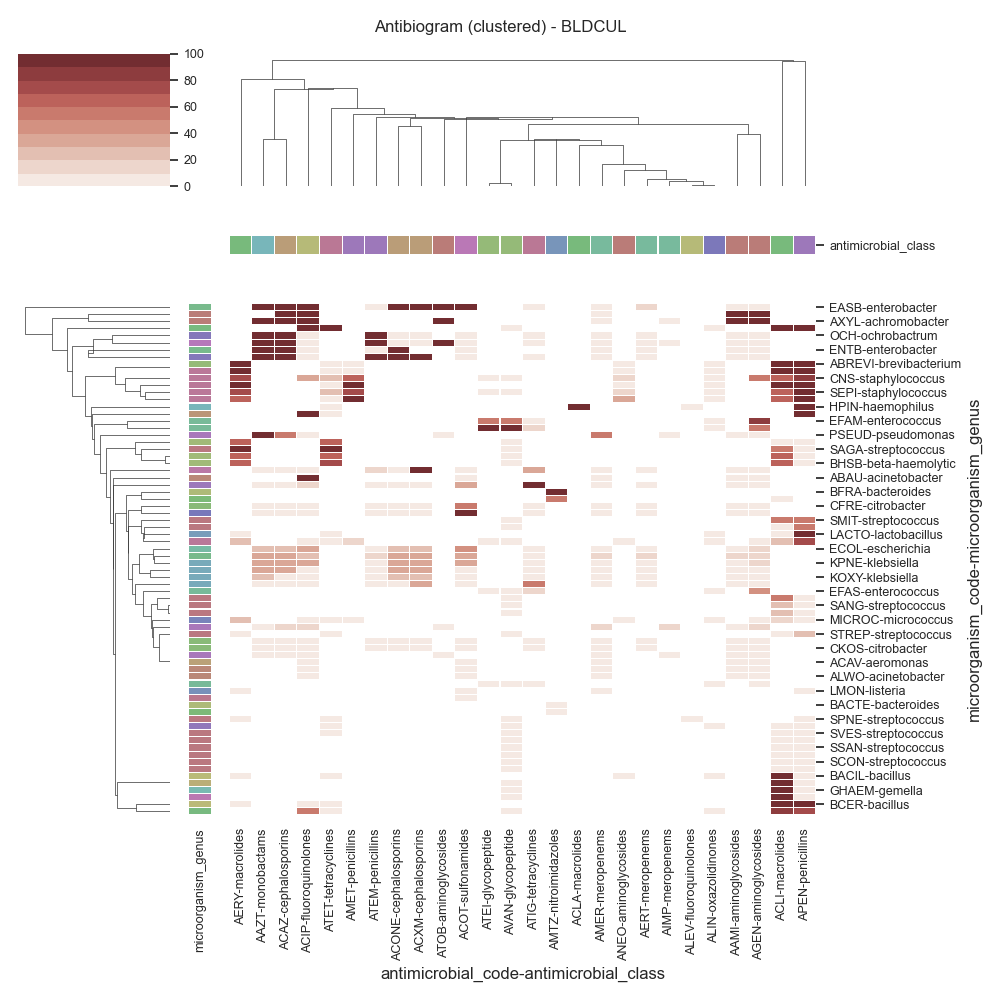
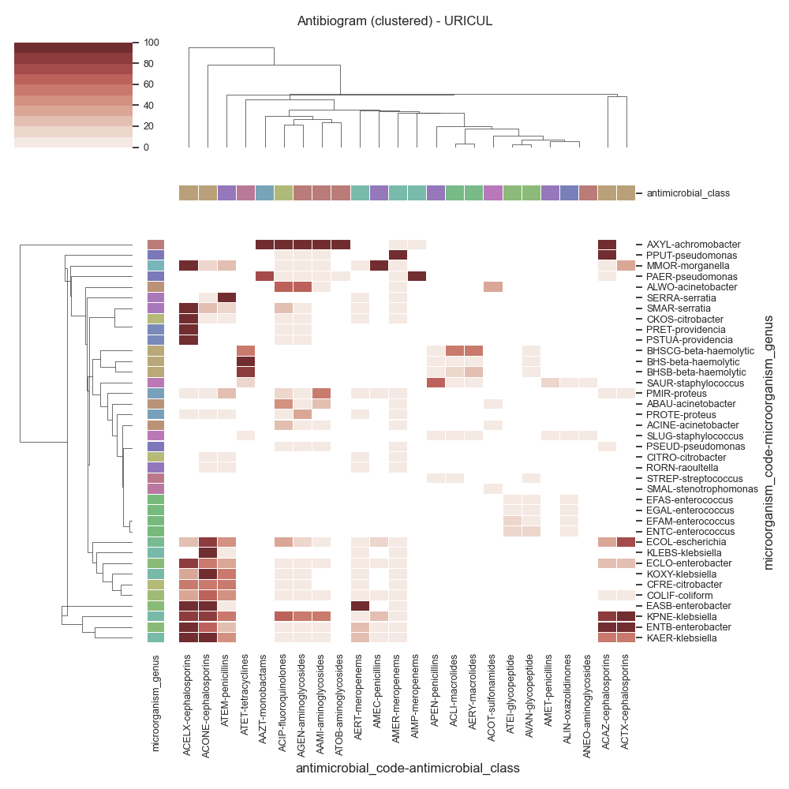

Note
Click here to download the full example code
SARI - Clustermap (by specimen)¶
Todo
Explain…
- 
- 


Out:
Data:
date_received date_outcome LastActDateODBC patient_id laboratory_number ... sensitivity microorganism_genus microorganism_specie microorganism_gram_type antimicrobial_class
0 2020-04-24 18:09:00 2020-04-27 00:00:00 27/04/2020 0 F1394192 ... sensitive coliform NaN NaN NaN
1 2020-04-24 18:09:00 2020-04-27 00:00:00 27/04/2020 0 F1394192 ... sensitive coliform NaN NaN cephalosporins
2 2020-04-24 18:09:00 2020-04-27 00:00:00 27/04/2020 0 F1394192 ... sensitive coliform NaN NaN fluoroquinolones
3 2020-04-24 18:09:00 2020-04-27 00:00:00 27/04/2020 0 F1394192 ... sensitive coliform NaN NaN aminoglycosides
4 2020-04-24 18:09:00 2020-04-27 00:00:00 27/04/2020 0 F1394192 ... sensitive coliform NaN NaN NaN
... ... ... ... ... ... ... ... ... ... ... ...
124640 2021-01-18 16:09:00 2021-01-22 00:00:00 2021-01-22 7785 X873071 ... NaN citrobacter NaN NaN meropenems
124641 2021-01-18 16:09:00 2021-01-22 00:00:00 2021-01-22 7785 X873071 ... NaN citrobacter NaN NaN NaN
124642 2021-01-18 16:09:00 2021-01-22 00:00:00 2021-01-22 7785 X873071 ... NaN citrobacter NaN NaN penicillins
124643 2021-01-18 16:09:00 2021-01-22 00:00:00 2021-01-22 7785 X873071 ... NaN citrobacter NaN NaN NaN
124644 2021-01-18 16:09:00 2021-01-22 00:00:00 2021-01-22 7785 X873071 ... NaN citrobacter NaN NaN aminoglycosides
[124645 rows x 22 columns]
Columns:
Index(['date_received', 'date_outcome', 'LastActDateODBC', 'patient_id', 'laboratory_number', 'specimen_code', 'specimen_name', 'specimen_description', 'microorganism_piece_counter', 'microorganism_code', 'microorganism_name', 'antimicrobial_code', 'antimicrobial_name', 'sensitivity_method',
'sensitivity_code', 'mic', 'reported', 'sensitivity', 'microorganism_genus', 'microorganism_specie', 'microorganism_gram_type', 'antimicrobial_class'],
dtype='object')
SARI (overall):
sensitivity hide highly resistant intermediate not determined resistant sensitive freq sari
specimen_code microorganism_code antimicrobial_code
ASFCUL CALB AAMPH 0.0 0.0 0.0 0.0 0.0 3.0 3.0 0.0
AAND 0.0 0.0 0.0 0.0 0.0 3.0 3.0 0.0
AFLUZ 0.0 0.0 0.0 0.0 0.0 3.0 3.0 0.0
AITR 0.0 0.0 0.0 0.0 0.0 3.0 3.0 0.0
AMF 0.0 0.0 0.0 0.0 0.0 3.0 3.0 0.0
... ... ... ... ... ... ... ... ...
WOUCUL PROTE AERT 0.0 0.0 0.0 0.0 0.0 1.0 1.0 0.0
AFOX 0.0 0.0 0.0 0.0 0.0 1.0 1.0 0.0
ATAZ 0.0 0.0 0.0 0.0 0.0 1.0 1.0 0.0
ATEM 0.0 0.0 0.0 0.0 0.0 1.0 1.0 0.0
PANA AMTZ 0.0 0.0 0.0 2.0 0.0 1.0 3.0 0.0
[7656 rows x 8 columns]
Cultures:
specimen_code
URNCUL 19714.0
WOUCUL 12848.0
BLDCUL 12563.0
SPTCUL 8615.0
URICUL 7690.0
TIPCUL 3842.0
TISCUL 3597.0
MNGCUL 3171.0
ITUCUL 2631.0
NEOCUL 2016.0
BALCUL 1866.0
PSWCUL 1649.0
CROCUL 1521.0
VAGCUL 1401.0
BFLCUL 1276.0
SKNCUL 1189.0
ETTCUL 990.0
LVSCUL 875.0
GNGCUL 846.0
DRFCUL 823.0
EARCUL 721.0
PUSCUL 656.0
EYECUL 568.0
PDFCUL 318.0
FBCUL 304.0
MRSCUL 283.0
THRCUL 258.0
CSCCUL 257.0
ASFCUL 227.0
JFLCUL 210.0
NOSCUL 183.0
SEMCUL 122.0
CSFCUL 109.0
NPACUL 108.0
GLNCUL 104.0
PLFCUL 103.0
MTHCUL 75.0
IUDCUL 61.0
CLCUL 60.0
BILCUL 51.0
FAECUL 34.0
URECUL 32.0
WICCUL 25.0
PNCUL 13.0
FSTCUL 11.0
Name: freq, dtype: float64
Data (BLDCUL)
antimicrobial_code AAMI AAZT ACAZ ACIP ACLA ... ATEM ATET ATIG ATOB AVAN
antimicrobial_class aminoglycosides monobactams cephalosporins fluoroquinolones macrolides ... penicillins tetracyclines tetracyclines aminoglycosides glycopeptide
microorganism_code microorganism_genus ...
ABAU acinetobacter 0 0 0 100 0 ... 0 0 0 0 0
ABREVI brevibacterium 0 0 0 0 0 ... 0 0 0 0 0
ACAV aeromonas 0 0 0 0 0 ... 0 0 0 0 0
ACHRO achromobacter 100 0 100 100 0 ... 0 0 0 0 0
ACINE acinetobacter 0 0 0 0 0 ... 0 0 0 0 0
... ... ... ... ... ... ... ... ... ... ... ...
SSAL streptococcus 0 0 0 0 0 ... 0 0 0 0 0
SSAN streptococcus 0 0 0 0 0 ... 0 0 0 0 0
STAPH staphylococcus 0 0 0 0 0 ... 0 0 0 0 0
STREP streptococcus 0 0 0 0 0 ... 0 0 0 0 0
SVES streptococcus 0 0 0 0 0 ... 0 0 0 0 0
[72 rows x 26 columns]
c:\users\kelda\desktop\repositories\virtualenvs\venvpy39-datablend\lib\site-packages\seaborn\matrix.py:1216: UserWarning:
``square=True`` ignored in clustermap
Data (SPTCUL)
antimicrobial_code AAMI AAZT ACAZ ACIP ACLA ... ATEM ATET ATIG ATOB AVAN
antimicrobial_class aminoglycosides monobactams cephalosporins fluoroquinolones macrolides ... penicillins tetracyclines tetracyclines aminoglycosides glycopeptide
microorganism_code microorganism_genus ...
ABAU acinetobacter 0 100 100 50 0 ... 100 0 0 0 0
ACINE acinetobacter 0 0 0 66 0 ... 0 0 0 0 0
BHSB beta-haemolytic 0 0 0 0 0 ... 0 66 0 0 0
CFRE citrobacter 0 14 10 0 0 ... 0 0 0 0 0
CKOS citrobacter 14 0 8 0 0 ... 16 0 14 0 0
CSTR corynebacterium 0 0 0 100 0 ... 0 71 0 0 0
DACI delftia 100 100 0 50 0 ... 0 0 0 0 0
EASB enterobacter 0 0 0 0 0 ... 0 0 0 0 0
ECLO enterobacter 0 11 13 0 0 ... 16 0 7 0 0
ECOL escherichia 9 33 27 39 0 ... 4 0 1 0 0
EFAM enterococcus 0 0 0 0 0 ... 0 0 0 0 50
EFAS enterococcus 0 0 0 0 0 ... 0 0 0 0 0
ENTB enterobacter 50 50 25 0 0 ... 25 0 0 0 0
ENTC enterococcus 0 0 0 0 0 ... 0 0 0 0 0
HAEMO haemophilus 0 0 0 0 100 ... 0 100 0 0 0
HALV hafnia 0 0 0 0 0 ... 0 0 0 0 0
HINF haemophilus 0 0 0 0 88 ... 0 0 0 0 0
HPIN haemophilus 0 0 0 0 100 ... 0 33 0 0 0
KAER klebsiella 6 58 50 11 0 ... 16 0 6 0 0
KLEBS klebsiella 0 0 0 0 0 ... 0 0 0 0 0
KOXY klebsiella 0 0 0 0 0 ... 0 0 0 0 0
KPNE klebsiella 4 42 39 28 0 ... 11 0 14 0 0
MCAT moraxella 0 0 0 0 37 ... 0 22 0 0 0
MMOR morganella 0 0 0 50 0 ... 25 0 33 0 0
PAER pseudomonas 6 23 18 17 0 ... 0 0 0 9 0
PMIR proteus 20 25 16 33 0 ... 16 0 80 0 0
PSEUD pseudomonas 0 50 0 0 0 ... 0 0 0 0 0
RORN raoultella 0 0 0 0 0 ... 33 0 0 0 0
SANG streptococcus 0 0 0 0 0 ... 0 0 0 0 0
SAUR staphylococcus 0 0 0 100 0 ... 0 8 0 0 0
SERRA serratia 0 0 0 0 0 ... 0 0 0 0 0
SLIQ serratia 0 0 0 0 0 ... 0 0 0 0 0
SMAL stenotrophomonas 0 0 0 0 0 ... 0 0 0 0 0
SMAR serratia 2 2 0 14 0 ... 24 0 5 0 0
SMIL streptococcus 0 0 0 0 0 ... 0 0 0 0 0
SODOR serratia 0 0 0 0 0 ... 0 0 0 0 0
SPNE streptococcus 0 0 0 0 0 ... 0 35 0 0 0
STAPH staphylococcus 0 0 0 0 0 ... 0 0 0 0 0
[38 rows x 26 columns]
c:\users\kelda\desktop\repositories\virtualenvs\venvpy39-datablend\lib\site-packages\seaborn\matrix.py:1216: UserWarning:
``square=True`` ignored in clustermap
Data (URICUL)
antimicrobial_code AAMI AAZT ACAZ ACELX ACIP ... ATEI ATEM ATET ATOB AVAN
antimicrobial_class aminoglycosides monobactams cephalosporins cephalosporins fluoroquinolones ... glycopeptide penicillins tetracyclines aminoglycosides glycopeptide
microorganism_code microorganism_genus ...
ABAU acinetobacter 20 0 0 0 40 ... 0 0 0 0 0
ACINE acinetobacter 0 0 0 0 21 ... 0 0 0 0 0
ALWO acinetobacter 0 0 0 0 66 ... 0 0 0 0 0
AXYL achromobacter 100 100 100 0 100 ... 0 0 0 100 0
BHS beta-haemolytic 0 0 0 0 0 ... 0 0 100 0 0
BHSB beta-haemolytic 0 0 0 0 0 ... 0 0 83 0 0
BHSCG beta-haemolytic 0 0 0 0 0 ... 0 0 50 0 0
CFRE citrobacter 0 0 0 50 0 ... 0 50 0 0 0
CITRO citrobacter 0 0 0 0 0 ... 0 0 0 0 0
CKOS citrobacter 0 0 0 100 0 ... 0 0 0 0 0
COLIF coliform 0 0 0 36 9 ... 0 40 0 0 0
EASB enterobacter 0 0 0 100 0 ... 0 0 0 0 0
ECLO enterobacter 0 0 20 88 0 ... 0 37 0 0 0
ECOL escherichia 8 0 38 26 31 ... 0 42 0 0 0
EFAM enterococcus 0 0 0 0 0 ... 18 0 0 0 9
EFAS enterococcus 0 0 0 0 0 ... 0 0 0 0 0
EGAL enterococcus 0 0 0 0 0 ... 0 0 0 0 0
ENTB enterobacter 0 0 100 100 0 ... 0 25 0 0 0
ENTC enterococcus 0 0 0 0 0 ... 16 0 0 0 15
KAER klebsiella 0 0 50 100 0 ... 0 42 0 0 0
KLEBS klebsiella 0 0 0 0 0 ... 0 0 0 0 0
KOXY klebsiella 0 0 0 33 0 ... 0 50 0 0 0
KPNE klebsiella 50 0 80 80 60 ... 0 54 0 0 0
MMOR morganella 0 0 0 100 0 ... 0 22 0 0 0
PAER pseudomonas 0 75 6 0 9 ... 0 0 0 0 0
PMIR proteus 50 0 0 0 14 ... 0 20 0 0 0
PPUT pseudomonas 0 0 100 0 0 ... 0 0 0 0 0
PRET providencia 0 0 0 100 0 ... 0 0 0 0 0
PROTE proteus 0 0 0 0 0 ... 0 0 0 0 0
PSEUD pseudomonas 0 0 0 0 0 ... 0 0 0 0 0
PSTUA providencia 0 0 0 100 0 ... 0 0 0 0 0
RORN raoultella 0 0 0 0 0 ... 0 0 0 0 0
SAUR staphylococcus 0 0 0 0 0 ... 0 0 18 0 0
SERRA serratia 0 0 0 0 0 ... 0 100 0 0 0
SLUG staphylococcus 0 0 0 0 0 ... 0 0 0 0 0
SMAL stenotrophomonas 0 0 0 0 0 ... 0 0 0 0 0
SMAR serratia 0 0 0 100 25 ... 0 14 0 0 0
STREP streptococcus 0 0 0 0 0 ... 0 0 0 0 0
[38 rows x 24 columns]
c:\users\kelda\desktop\repositories\virtualenvs\venvpy39-datablend\lib\site-packages\seaborn\matrix.py:1216: UserWarning:
``square=True`` ignored in clustermap
Data (URNCUL)
antimicrobial_code AAMI AAZT ACAZ ACELX ACIP ... ATEM ATET ATIG ATOB AVAN
antimicrobial_class aminoglycosides monobactams cephalosporins cephalosporins fluoroquinolones ... penicillins tetracyclines tetracyclines aminoglycosides glycopeptide
microorganism_code microorganism_genus ...
ABAU acinetobacter 0 0 0 100 0 ... 0 0 0 0 0
ACINE acinetobacter 0 0 0 0 83 ... 0 0 0 0 0
ALWO acinetobacter 0 0 0 0 0 ... 0 0 0 0 0
BFRA bacteroides 0 0 0 0 0 ... 0 0 0 0 0
BHS beta-haemolytic 0 0 0 0 0 ... 0 100 0 0 0
BHSB beta-haemolytic 0 0 0 0 0 ... 0 87 0 0 0
BHSCG beta-haemolytic 0 0 0 0 0 ... 0 0 0 0 0
BHSG beta-haemolytic 0 0 0 0 0 ... 0 0 0 0 0
CAMA citrobacter 0 0 100 100 0 ... 0 0 0 0 0
CBRA citrobacter 0 0 33 100 0 ... 0 0 0 0 0
CFRE citrobacter 7 0 7 100 14 ... 7 0 0 0 0
CITRO citrobacter 0 0 0 100 0 ... 0 0 0 0 0
CKOS citrobacter 0 0 0 0 0 ... 100 0 0 0 0
CNS staphylococcus 0 0 0 0 0 ... 0 0 0 0 0
COLIF coliform 9 0 20 3 3 ... 20 0 0 0 0
EASB enterobacter 0 0 0 100 0 ... 100 0 0 0 0
ECLO enterobacter 15 0 43 100 28 ... 42 0 0 0 0
ECOL escherichia 4 0 64 17 22 ... 27 0 0 0 0
EFAM enterococcus 0 0 0 0 0 ... 0 0 100 0 33
EFAS enterococcus 0 0 0 0 0 ... 0 0 0 0 14
ENTB enterobacter 0 0 20 100 16 ... 50 0 0 0 0
ENTC enterococcus 0 0 0 0 0 ... 0 0 14 0 6
HALV hafnia 0 0 0 100 0 ... 0 0 0 0 0
KAER klebsiella 0 0 33 100 0 ... 40 0 0 0 0
KLEBS klebsiella 0 0 0 0 0 ... 0 0 0 0 0
KOXY klebsiella 0 0 100 71 57 ... 75 0 0 0 0
KPNE klebsiella 7 0 77 69 67 ... 30 0 0 0 0
MMOR morganella 0 0 11 100 7 ... 26 0 0 0 0
PAER pseudomonas 1 14 7 0 9 ... 0 0 0 5 0
PMIR proteus 13 0 6 3 6 ... 10 0 0 0 0
PPUT pseudomonas 0 0 0 0 0 ... 0 0 0 0 0
PRET providencia 0 0 0 100 0 ... 0 0 0 0 0
PROTE proteus 0 0 0 25 0 ... 0 0 0 0 0
PSEUD pseudomonas 0 100 36 0 0 ... 0 0 0 0 0
PSTUA providencia 0 0 0 0 0 ... 0 0 0 0 0
PVUL proteus 0 0 0 100 0 ... 100 0 0 0 0
QMIXP mixed 0 0 0 100 100 ... 0 0 0 0 0
SANG streptococcus 0 0 0 0 0 ... 0 0 0 0 0
SAUR staphylococcus 0 0 0 0 0 ... 0 19 0 0 0
SBOV streptococcus 0 0 0 0 0 ... 0 0 0 0 0
SEPI staphylococcus 0 0 0 0 0 ... 0 0 0 0 0
SHAEM staphylococcus 0 0 0 0 0 ... 0 66 0 0 0
SMAL stenotrophomonas 0 0 0 0 0 ... 0 0 0 0 0
SMAR serratia 0 0 0 100 13 ... 80 0 0 0 0
[44 rows x 26 columns]
c:\users\kelda\desktop\repositories\virtualenvs\venvpy39-datablend\lib\site-packages\seaborn\matrix.py:1216: UserWarning:
``square=True`` ignored in clustermap
Data (WOUCUL)
antimicrobial_code AAMI AAZT ACAZ ACIP ACLI ... ATEM ATET ATIG ATOB AVAN
antimicrobial_class aminoglycosides monobactams cephalosporins fluoroquinolones macrolides ... penicillins tetracyclines tetracyclines aminoglycosides glycopeptide
microorganism_code microorganism_genus ...
ABAU acinetobacter 100 0 0 100 0 ... 0 0 0 0 0
ACINE acinetobacter 0 0 0 100 0 ... 0 0 0 0 0
AEROM aeromonas 0 0 0 0 0 ... 0 0 0 0 0
AFAE alcaligenes 0 100 0 0 0 ... 100 0 0 0 0
ALWO acinetobacter 0 0 0 100 0 ... 0 0 0 0 0
AXYL achromobacter 100 0 0 100 0 ... 0 0 0 0 0
BCER bacillus 0 0 0 0 100 ... 0 0 0 0 0
BHS beta-haemolytic 0 0 0 0 0 ... 0 0 0 0 100
BHSA beta-haemolytic 0 0 0 0 25 ... 0 50 0 0 0
BHSB beta-haemolytic 0 0 0 0 30 ... 0 80 0 0 0
BHSCG beta-haemolytic 0 0 0 0 21 ... 0 43 0 0 0
CBRA citrobacter 0 0 0 0 0 ... 0 0 0 0 0
CFRE citrobacter 0 0 0 0 0 ... 0 0 0 0 0
CITRO citrobacter 0 0 0 0 0 ... 0 0 0 0 0
CKOS citrobacter 0 0 0 0 0 ... 0 0 0 0 0
COLIF coliform 16 33 11 11 0 ... 5 0 0 0 0
CORYN corynebacterium 0 0 0 40 60 ... 0 0 0 0 0
CSTR corynebacterium 0 0 0 90 90 ... 0 70 0 0 0
ECLO enterobacter 7 30 20 13 0 ... 10 0 33 0 0
ECOL escherichia 10 44 24 31 0 ... 8 0 3 0 0
EFAM enterococcus 0 0 0 0 0 ... 0 0 0 0 30
EFAS enterococcus 0 0 0 0 0 ... 0 0 24 0 7
ENTB enterobacter 100 100 50 50 0 ... 50 0 0 0 0
ENTC enterococcus 0 0 0 0 0 ... 0 0 0 0 66
HPIN haemophilus 0 0 0 0 0 ... 0 0 0 0 0
KAER klebsiella 0 100 11 0 0 ... 10 0 0 0 0
KLEBS klebsiella 0 0 0 0 0 ... 0 0 0 0 0
KOXY klebsiella 0 0 0 0 0 ... 0 0 0 0 0
KPNE klebsiella 10 68 50 47 0 ... 11 0 0 0 0
MMOR morganella 0 0 20 0 0 ... 20 0 0 0 0
PAER pseudomonas 0 27 8 12 0 ... 0 0 0 6 0
PANA peptostreptococcus 0 0 0 0 0 ... 0 0 0 0 0
PBIV prevotella 0 0 0 0 0 ... 0 0 0 0 0
PMIR proteus 14 0 0 29 0 ... 0 0 85 0 0
PMUL pasteurella 0 0 0 0 0 ... 0 0 0 0 0
PORI pseudomonas 0 0 0 0 0 ... 0 0 0 0 0
PRET providencia 0 0 0 0 0 ... 0 0 0 0 0
PROTE proteus 0 0 0 0 0 ... 0 0 0 0 0
PSEUD pseudomonas 0 0 12 0 0 ... 0 0 0 0 0
PSTU pseudomonas 0 0 0 0 0 ... 0 0 0 0 0
QMAN mixed 0 0 0 0 0 ... 0 0 0 0 0
RORN raoultella 0 0 0 0 0 ... 0 0 0 0 0
SALMO salmonella 0 0 0 0 0 ... 0 0 0 0 0
SANG streptococcus 0 0 0 0 0 ... 0 0 0 0 0
SAUR staphylococcus 0 0 0 26 23 ... 0 7 0 0 0
SEPI staphylococcus 0 0 0 0 100 ... 0 50 0 0 0
SLUG staphylococcus 0 0 0 0 66 ... 0 0 0 0 0
SMAL stenotrophomonas 0 0 0 0 0 ... 0 0 0 0 0
SMAR serratia 0 0 5 0 0 ... 23 0 50 0 0
SMIL streptococcus 0 0 0 0 0 ... 0 0 0 0 0
STAPH staphylococcus 0 0 0 0 0 ... 0 0 0 0 0
STREP streptococcus 0 0 0 0 33 ... 0 0 0 0 0
[52 rows x 25 columns]
c:\users\kelda\desktop\repositories\virtualenvs\venvpy39-datablend\lib\site-packages\seaborn\matrix.py:1216: UserWarning:
``square=True`` ignored in clustermap
9 10 11 12 13 14 15 16 17 18 19 20 21 22 23 24 25 26 27 28 29 30 31 32 33 34 35 36 37 38 39 40 41 42 43 44 45 46 47 48 49 50 51 52 53 54 55 56 57 58 59 60 61 62 63 64 65 66 67 68 69 70 71 72 73 74 75 76 77 78 79 80 81 82 83 84 85 86 87 88 89 90 91 92 93 94 95 96 97 98 99 100 101 102 103 104 105 106 107 108 109 110 111 112 113 114 115 116 117 118 119 120 121 122 123 124 125 126 127 128 129 130 131 132 133 134 135 136 137 138 139 140 141 142 143 144 145 146 147 148 149 150 151 152 153 154 155 156 157 158 159 160 161 162 163 164 165 166 167 168 169 170 171 172 173 174 175 176 177 178 179 180 181 182 183 184 185 186 187 188 189 190 191 192 193 194 195 196 197 198 199 200 201 202 203 204 205 206 207 208 209 210 211 212 213 214 215 216 217 218 219 | # Libraries
import sys
import numpy as np
import pandas as pd
import seaborn as sns
import matplotlib as mpl
import matplotlib.pyplot as plt
# Import specific libraries
from pyamr.core.sari import SARI
from pyamr.core.freq import Frequency
from pyamr.datasets.load import make_susceptibility
# -------------------------
# Configuration
# -------------------------
# Configure seaborn style (context=talk)
sns.set(style="white")
# Set matplotlib
mpl.rcParams['xtick.labelsize'] = 9
mpl.rcParams['ytick.labelsize'] = 9
mpl.rcParams['axes.titlesize'] = 11
mpl.rcParams['legend.fontsize'] = 9
# Pandas configuration
pd.set_option('display.max_colwidth', 40)
pd.set_option('display.width', 300)
pd.set_option('display.precision', 4)
# Numpy configuration
np.set_printoptions(precision=2)
# ------------------
# Methods
# ------------------
def get_category_colors(index, category, cmap='hls'):
"""This method creates the colors for the different elements in
categorical feature vector.
Parameters
----------
values : array-like
The vector with the categorical values
cmap: string-like
The colormap to use
default: string-like
The color to be used for the first value. Note that this
value needs to appear first on the the sorted list, as such
it is recommended to set is as _default.
Returns
-------
"""
# Get categories
categories = index.get_level_values(category)
# Get unique elements
unique = np.unique(categories)
# Create the palette
palette = sns.color_palette(cmap, desat=0.5, n_colors=unique.shape[0])
# Create mappers from category to color
mapper = dict(zip(map(str, unique), palette))
# Create list with colors for each category
colors = pd.Series(categories, index=index).map(mapper)
# Return
return colors
# ------------------------
# Methods
# ------------------------
def create_mapper(dataframe, column_key, column_value):
"""This method constructs a mapper
Parameters
----------
dataframe: dataframe-like
The dataframe from which the columns are extracted
column_key: string-like
The name of the column with the values for the keys of the mapper
column_value: string-like
The name of the column with the values for the values of the mapper
Returns
-------
dictionary
"""
dataframe = dataframe[[column_key, column_value]]
dataframe = dataframe.drop_duplicates()
return dict(zip(dataframe[column_key], dataframe[column_value]))
# -------------------------------------------
# Load data
# -------------------------------------------
# Load data
data = make_susceptibility()
# Show
print("\nData:")
print(data)
print("\nColumns:")
print(data.columns)
# -------------------------------------------
# Compute SARI
# -------------------------------------------
# Libraries
from pyamr.core.sari import SARI
# Create sari instance
sari = SARI(groupby=['specimen_code',
'microorganism_code',
'antimicrobial_code',
'sensitivity'])
# Compute SARI overall
sari_overall = sari.compute(data,
return_frequencies=True)
# Show
print("SARI (overall):")
print(sari_overall)
# -------------------------------------------
# Plot
# -------------------------------------------
# Reset
sari_overall = sari_overall.reset_index()
# Count records per specimen
specimen_count = sari_overall \
.groupby('specimen_code').freq.sum() \
.sort_values(ascending=False)
# Show
print("Cultures:")
print(specimen_count)
# Filter
sari_overall = sari_overall[sari_overall \
.specimen_code.isin( \
specimen_count.index.values[:5])]
# Loop
for specimen, df in sari_overall.groupby(by='specimen_code'):
# -------------------------------
# Create matrix
# -------------------------------
# Create mappers
abx_map = create_mapper(data, 'antimicrobial_code', 'antimicrobial_class')
org_map = create_mapper(data, 'microorganism_code', 'microorganism_genus')
# Filter
matrix = df.copy(deep=True)
matrix = df.reset_index()
matrix['microorganism_genus'] = matrix.microorganism_code.map(org_map)
matrix['antimicrobial_class'] = matrix.antimicrobial_code.map(abx_map)
#matrix = matrix[matrix.freq > 100]
# Pivot table
matrix = pd.pivot_table(matrix,
index=['microorganism_code', 'microorganism_genus'],
columns=['antimicrobial_code', 'antimicrobial_class'],
values='sari')
# Convert to percent
matrix = matrix * 100
# Create mask
mask = pd.isnull(matrix)
# Fill missing (error when computing distance)
matrix = matrix.fillna(1e-10)
# Show
print("\n\n\nData (%s)" % specimen)
print(matrix.astype(int))
# Create colormap
cmap = sns.color_palette("Reds", desat=0.5, n_colors=10)
# Row and col colors
col_colors = get_category_colors( \
index=matrix.columns, category=matrix.columns.names[1])
row_colors = get_category_colors( \
index=matrix.index, category=matrix.index.names[1])
# .. note: It is possible to also pass kwargs that would
# be used by sns.heatmap function (annot, fmt,
# annot_kws, ...
try:
# Plot cluster map
grid = sns.clustermap(data=matrix, vmin=0, vmax=100,
method='centroid', metric='euclidean', cmap=cmap,
linewidth=0.05, mask=mask, square=True,
row_colors=row_colors, col_colors=col_colors)
except Exception as e:
print("Exception: %s" % e)
# Configuration
plt.suptitle('Antibiogram (clustered) - %s' % specimen, fontsize=12)
plt.tight_layout()
# Show
plt.show()
|
Total running time of the script: ( 0 minutes 5.126 seconds)